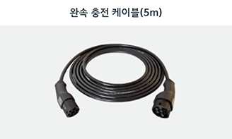

faq
문의하기
찾으시는 질문이 없으신가요?
kia 1:1 상담에 문의해주세요.
- 차량 구매
- 차량 정비
- 기아멤버스
- 기타
Q. EV케어 프로그램이란 무엇인가요?
기아 EV를 구매한 기아멤버스 회원이시라면 EV스타일케어, EV세이프티 케어에 가입하실 수 있습니다.
Q. Kia EV 그린패스는 어떤 서비스인가요?
멤버십 월 구독료는 매월 1일 정기 자동 결제됩니다. 단, 1회 차의 경우, 신청 일자 기준 잔여기간을 일할 계산하여 청구하며, 2회 차부터 등록된 지불수단을 통해 정기 자동 결제가 이루어집니다.
Q. 광고 정보 수신 동의 확인 문자를 받았습니다.
기아차량 보유 고객 중 광고성 정보 수신에 동의하신 고객님께 수신동의 여부를 확인하는 메시지 입니다. 이는 광고성 정보 수신에 동의한 고객님께 2년마다 수신동의 여부를 확인하는 것이 의무화 되면서 수신동의 확인을 위해 메시지를 발송해드렸습니다. 또한, 수신 동의 철회 시 상품정보, 혜택정보, 프로모션 및 이벤트 안내 등을 받아보실 수 없으며, 광고성 정보 수신동의 철회 시 고객센터(080-200-2000)로 문의하여 주시기 바랍니다.
Q. 기아 전기차 구매시 보조금은 어떻게 되나요?
전기차 보조금은 전기차를 구매할 때 정부와 지자체에서 정한 전기자동차 보조금 지원대상 자동차를 신규로 구매해 국내에 등록할 경우 보조금을 지급하는 제도입니다. (구매보조금 지급 상한액은 아래표를 참고해주세요.)
Q. 기아 표준 서비스 용품이 무엇인가요?
기아는 이면 할인 판매 및 과다 서비스 용품 제공 행위를 금지하고, 공정한 판매 실천과 고객님께 최고의 서비스를 제공해 드리고자 차량 구입 시 표준 서비스
용품을 드리고 있습니다. 표준 서비스 용품은 차량 계약 시 썬팅 시공권과 기아 컬렉션 KIT 중 택1하여 선택하실 수 있습니다.
* 하기 구성품은
2020년 2월 기준이며, 서비스 용품 및 구성품은 변경될 수 있습니다.
Q. 시승 신청은 어떻게 해야 하나요?
기아는 시승체험 편의 고객만족을 위해 다양한 시승서비스를 제공하고 있습니다. 고객님께서 희망하시는 가까운 센터에서 최고의 서비스를 직접 만나실 수 있습니다.
시승 신청은 기아 홈페이지(www.kia.com) 회원가입 및 로그인 후 신청하실 수 있으며, 예약 취소 시 재신청은 1주일 후부터 가능합니다.
* 시승 예약 절차 : 기아 시승서비스는 고객님께서 시승 예약 시 지정하신 동승 영업 담당과 시승 가능여부 확인 후 예약이 확정됩니다.
Q. 내비게이션 무선 업데이트는 어떻게 하나요?
일정 시간 이상 주행 시, 최신 버전의 지도와 소프트웨어로 자동 업데이트가 진행되며,
주행 종료 후 시동을 끌 때 팝업 표시창의 ‘시작’ 버튼을 누르면 시스템 업데이트까지 최종 완료됩니다.
* 업데이트 상태 확인은 '설정-일반-SW정보/업데이트' 에서 확인할 수 있습니다.
Q. 내비게이션 업데이트 주기가 어떻게 되나요?
내비게이션은 연 6회 정기 유/무선 업데이트를 통해 최신 지도 및 안정적인 내비게이션 시스템 & 신규 기능 적용을 제공하고 있으며, OTA 무선 업데이트를 통해
더욱 편리한 업데이트 경험을 제공하고 있습니다.
(단속 카메라 반영 등 기본 정보는 수시로 업데이트 중에 있음)
* OTA 무선 업데이트를 위해서는 기아커넥트 서비스 가입이 필요하며, 표준형5W/고급형6세대가 적용된 차종에서 제공됩니다.
Q. 빌트인 캠 녹화영상 관리 방법이 궁금합니다.
주행 중 상시 영상은 최대 3시간, 주차 중 상시 영상은 최대 20시간, 주행/주차 중 충격감지 이벤트는 최대 40건, 수동 스위치 녹화는 최대 30건 까지
저장 가능합니다.
저장공간 초과 시 가장 이른 녹화영상부터 자동 삭제되므로, 중요파일은 보관함[★]에 저장하시거나 사고 직후에도 차량 주행 필요 시 '주행중 녹화기능'을
꺼주세요.
Q. 차량 실내 자동 환기 설정은 어떻게 하나요?
히터 및 에어컨 작동 상태에서 버튼을 눌러 모드 선택 후, A/C 버튼을 누른 상태에서 내기 버튼을 3초 이내 5회 이상 누르십시오.
* 자세한 설정 방법은 별도로 지급되는 인포테인먼트 시스템 간편 설명서 내에 QR코드로 웹에 접속하여 확인할 수 있습니다.
Q. 기아멤버스 모바일카드 발급 방법.
기아멤버스 모바일 카드는 기아멤버스 사이트 또는 Mykia 어플리케이션에 회원가입(카드회원까지 가입 필수)을 하시면 발급 받으실 수 있습니다.
Q. 기아멤버스 카드를 모바일/실물중에 선택해서 받을 수 있나요?
2018년 4월 2일부터 기아자동차 구입 시 멤버십 가입 신청서에 "모바일카드"를 선택하신 경우, 별도의 실물 카드 발급 없이 모바일카드 발급 안내 문자가
발송되고 있습니다.
수신하신 문자에 포함된 URL로 접속하신 후 모바일카드 발급 및 사용이 가능하십니다.
(단, 문자수신 동의 여부에 ‘거부’ 를 선택하시면 모바일카드 관련 안내 문자 수신이 불가할 수 있습니다.)
Q. 기아멤버스 포인트 소멸시점은 언제인가요?
기아멤버스 포인트 유효기간은 적립시점으로부터 5년입니다.
기아멤버스 포인트 소멸은 포인트 활용기간을 좀 더 확보할 수 있도록 초기 적립시점의 익월 1일에
일괄적으로 소멸 됩니다.
Q. 기아멤버스 분실 시에도 포인트를 사용할 수 있나요?
적립된 멤버스포인트는 카드 없이도 오토큐에서 사용이 가능합니다.
오토큐에서 실물 카드 없이 멤버스포인트 사용 시 아래와 같은 방법으로 이용하시면 됩니다.
- 차량명의자와 휴대폰명의자가 동일한 경우 휴대폰 인증하여 사용 가능
Q. 기아 커넥트 스토어는 어떻게 이용하나요?
차량 구매 순간의 선택이 카 라이프의 전부를 결정한 것은 아닙니다. 이제 차량 구매 후에도 기아 커넥트 스토어(connectstore.kia.com)가 제공하는 새로운 기능들을 언제 어디서든지 추가로 구매해 평생, 또는 원하는 기간 동안 이용하실 수 있습니다.
Q. 완속 충전 케이블은 언제 사용하나요?
일부 완속 충전기는 관리의 어려움 등의 이유로 충전 케이블 미 설치합니다. 이런 경우 개인용 완속 충전 케이블 사용합니다.
Q. 완속과 급속 충전기는 어떻게 구분하나요?
국가표준으로 지정된 충전구의 핀 갯수로 구분됩니다.
핀이 5개인 AC단상은 완속 충전기
핀이 7개인 DC콤보는 급속 충전기
핀이 10개인 DC차데모는 급속 충전기
Q. 충전카드는 어떻게 발급받아야 하나요?
저공해차 통합 누리집 사이트(WWW.EV.OR.KR)에서 공공 충전 멤버십 카드 발급가능하며, 기타 충전사업자별 민간 충전 멤버십 카드는 사업자별 창구를 통해 발급가능합니다.
Q. 결제방식은 어떻게 되나요?
충전카드가 없어도 교통카드나 신용카드로 비회원 충전할 수 있으며, 충전 멤버십 카드 보유시 신청 창구를 통해 결제카드 등록이 가능합니다.
Q. 급속충전기는 어떠한 사용제약이 있나요?
환경부 급속충전기는 1회 충전당 40분 컷을 적용하고 있습니다. (사용자 재인증 후 추가 충전 가능) 한전 및 다른 충전사업자 충전기도 다른 차량이 대기할 경우 적당량을 충전하고 양보하는 것이 좋습니다.
자주 묻는 질문 best 5
Q. Kia Digital Key(NFC)란 무엇인가요?
Kia Digital Key는 NFC 안테나가 장착된 스마트폰 또는 카드 키로 차량의 도어를 열고 시동을 걸 수 있는 새로운 서비스입니다.
Q. 스마트 키 배터리 교환방법을 알려주세요.
스마트 키의 사용횟수와 기간에 따라 배터리 성능이 저하되었을 경우 배터리 교환이 필요합니다. 배터리 교환 시 차종별 스마트 키 배터리 용량을 확인 후 배터리를 구입하여 교환하시면 됩니다.
Q. 직영 서비스센터 운영 시간은 어떻게 되나요?
직영 서비스센터의 업무시간은 평일(월~금) 08:30~17:30까지 이며, 중식시간은 12:30~13:30 입니다. 직영서비스센터는 예약제로 운영되므로
방문 전 사전 예약 바랍니다.
토탈 예약 센터 안내 (1899-0200)
Q. MyKia는 어떤 서비스 인가요?
날씨, 차량 상태를 포함 사용자 데이터 기반 개인 맞춤형 화면과 콘텐츠를 제공합니다. 차량 운행 후 안전운전 점수 및 운전 습관 데이터를 MyKia를 통해 확인해 보세요. 정기 점검, 보증 및 리콜 정보까지 꼼꼼하게 챙겨주고, 가까운 정비소 검색과 손쉬운 예약을 도와줍니다.
Q. 기아 통합 계정이 무엇인가요?
기아 통합 계정은, 기아닷컴 / 기아멤버스 홈페이지 / MyKia 모바일 앱 / 기아 디지털키 / Kia Connect 등 기아에서 제공하는 서비스를 사용하기 위한 계정으로, 하나의 ID로 모든 서비스를 이용할 수 있습니다.